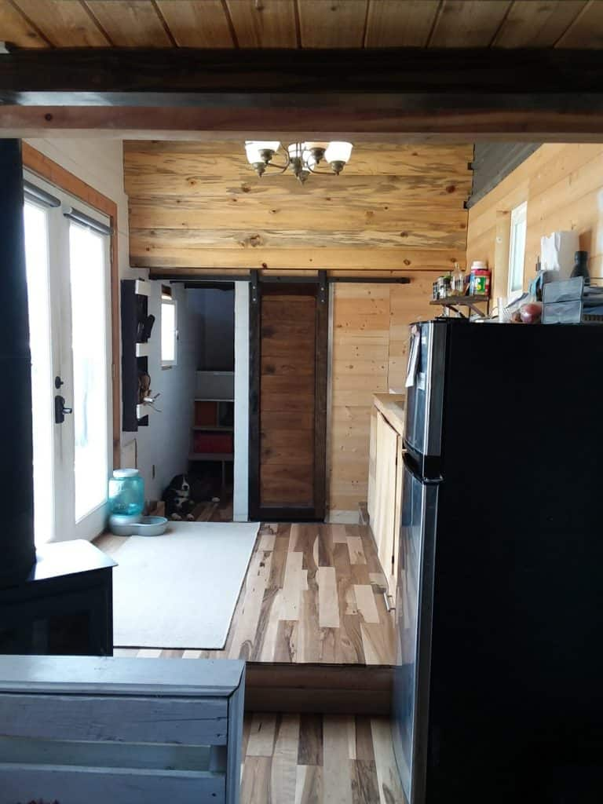
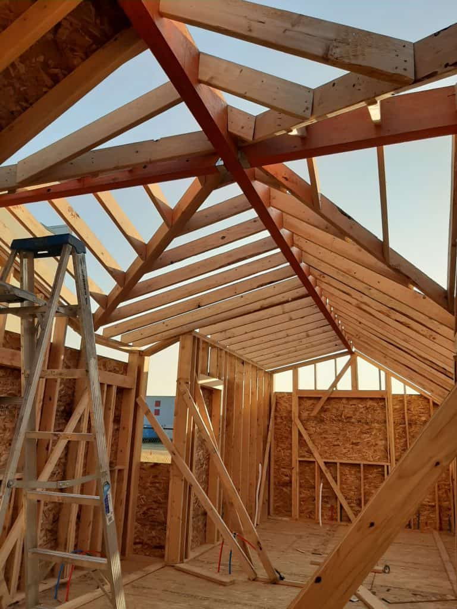

August 5, 2019

This article has been reviewed in accordance with our editorial policy.
Many people have had concerns about their height in a tiny house on wheels (THOW), our homes have always felt spacious. So I wanted to cover this topic in more detail to help everyone understand THOWs better.
So, what are the loft heights in a Tiny House on Wheels (THOW)? On average a loft height will be from 36" to 48". The height will depend on multiple factors, such as the height of the trailer you are using and the type of roof shape you choose.
So, what are the ceiling heights in a Tiny House on Wheels (THOW)? Average ceiling heights under a loft will be from 6' 7" to 7'. However, ceiling heights where there is no loft are 9' 6" up to 11'! But this will vary depending on the type of roof you choose.
Let's look more at how the heights are determined. The total height of the house will be 13' 6", including the trailer. There is a standard max height for THOWs. However, the loft and ceiling heights can vary drastically based on a few factors.
The legal height limit for tiny houses being pulled on the road is 13' 6" in almost all states. There are a few exceptions, such as in Oregon the height can be 14' tall. THOWs are built to be 13' 6" high for legal towing purposes.
The ceiling height in the house will then vary based on three factors: trailer height, occupant height, and the roof shape. If a company uses different trailers then the actual house height will vary about 4 or 5 inches. There is not usually a standard ceiling height for any specific model of a THOW due to the trailers being different.
Trailers are typically 26 to 38 inches tall. That will leave a foot variance in height depending on which one you use.
Another determining factor is how tall the people living in it will be. If someone is 6' 4", they won't want their ceilings to be 6' 7", so they will need more height on the main floor and this will result in lower loft heights.
The final determining factor of ceiling height is the shape of the roof. If you have anything but a flat roof then wherever the roof slopes you will have less height on the inside of the house.
Typical loft heights are from 36" to 48", or 3 feet to 4 feet. These are built based on how much room you want in them but also how much ceiling height you need below them. Given that the overall height can only be 13' 6", then taking height out for the loft will lower the ceilings.
For example, trailers are typically 26" to 38". Let's say your trailer is 3 feet tall and your lofts are 3 feet tall. That leaves 7' 6" for your ceiling height. If you are a taller person or want higher ceilings then you will have smaller lofts.
Let's say you want to sleep in your loft and you have the same 3-foot trailer. You then decide to go with a 4-foot loft height and now you will have a 6' 6" ceiling height below your lofts. This is customizable to your lifestyle.
You can have very high ceilings in THOWs when not under a loft. Most THOWs have one or two lofts on either side of the house, and then in the middle, they are very open. This makes the home feel a lot bigger.

Keep in mind that the roof shape affects the inside height. You can have a very grand and luxurious tiny house if you have high ceilings, making the house feel open. If you do not have any lofts you can create a beautiful design and make your tiny house feel very open at the same time, but you will lose space.


Here are seven of the most popular roof shapes.
Let's dive into these a little more and see how it affects your interior height.
You will not lose any interior height with this style.
A shed roof is a slope. It's typically a 2/12 pitch to keep as much interior height as possible. This means that it will drop 2 inches for every foot in length.
THOWs are normally 8' or 8' 6" wide, so the roof will drop 16 or 17 inches on one side. So if you have a 42-inch loft height, then on the sloped side you will only have 26 inches of space.
With an A-Frame the tallest point is in the middle and the edges have less headroom. These types of roofs typically max out at a 6/12 pitch.
So if the middle of the trailer is the max height at 13' 6", then the sides will be 11' 6", including the trailer height. Let's use the same example of a 42-inch loft. In the middle of the loft, you will have 42 inches of headroom. Up against both walls, you will only have 18 inches.
These are standard barn roofs and look like half barrels. The highest point is still in the center but the sides maintain more of their height.
On average you will lose about 6 inches of height on each side of the walls. Thus a 42-inch loft will be 36 inches on each side. However, these are one of the more difficult and costly roofs to build.
This is where the roof slants down toward the middle from the front and back of the trailer. The lowest part of the roof is where the two sections of the roof meet. This can be in the center of the house or offset.
This will mean that your lofts, at the far ends of the house, will have the most height, and the center, typically where you have open ceilings, will have less overall height. This can be a great setup for maintaining a good amount of height in your lofts.
This type of roof slants downward toward each end of the trailer, with a parapet wall in the middle, which divides the two slopes.
With this style of roof, you can only have a loft on one side. The lowest part of the loft will be against the wall. You will get more height as your loft gets closer to the center of the house.
This is an offset A-Frame. On each side of the roof, you will have a different pitch so that the walls can be the same height. Typically the steeper slope will be an 8-9/12 and the other side will be a 3-5/12 pitch.
The center of the loft will be higher and you will lose space as you head toward the walls. It is hard to say exactly how many inches you will lose and it varies based on where the peak of the roof is located. You will lose anywhere from a foot to two and a half feet of height against the walls.
How high is a Tiny House trailer?
Typically trailers for building tiny houses are between 26 to 38 inches in height. It depends on the manufacturer for the exact height. This will then impact the interior height of your house since they have a max height of 13' 6" to be legally towed.
Can you have a Tiny House loft with standing space?
You can have standing space in your tiny house loft, you will just need the area below to be used for storage or a seated area. You will not be able to build a loft where you can stand in it and under it in a tiny house on wheels.